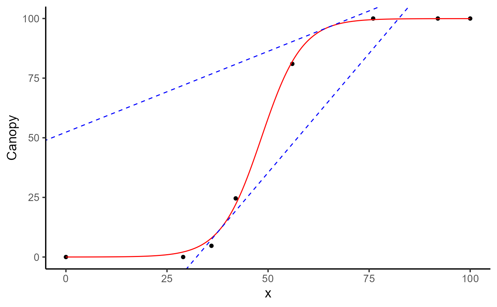
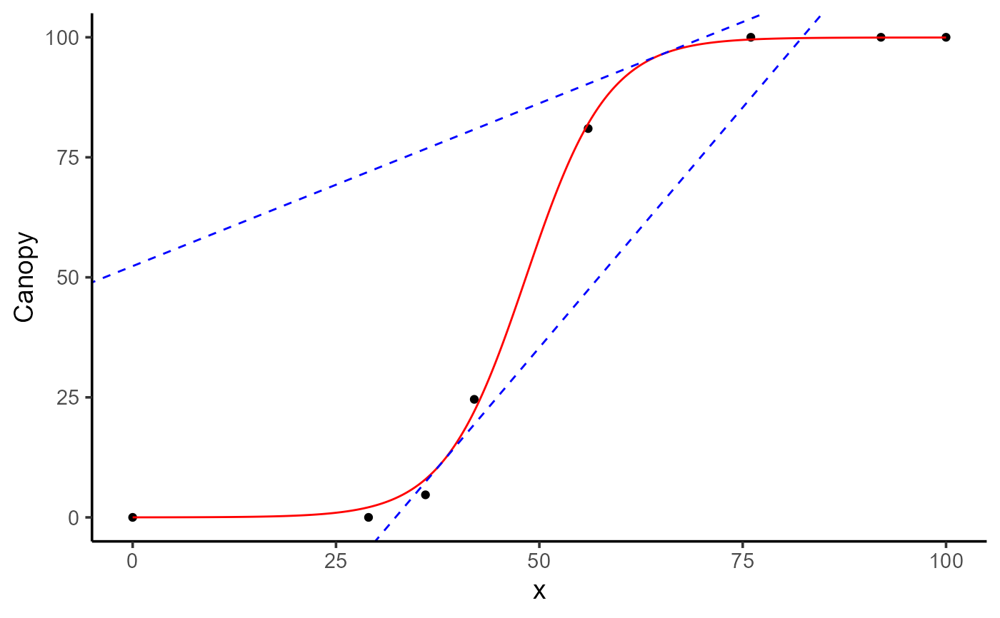

Computes the slope and intercept of the tangent line(s) to a fitted curve at one or more specified x-values.
Arguments
- object
A fitted object of class
modeler, created bymodeler().- x
A numeric vector of x-values at which to compute tangent lines. A data.frame is also accepted with columns <uid, x>.
- id
Optional vector of
uids indicating which groups to compute tangent lines for. IfNULL, all groups are used.
Value
A tibble with one row per tangent line and the following columns:
uid: unique identifier of the group.fn_name: Name of the fitted function.x: x-value where the tangent line is evaluated.y: Fitted y-value at x.slope: First derivative (slope of tangent) at x.intercept: y-intercept of the tangent line.
Examples
library(flexFitR)
library(ggplot2)
data(dt_potato)
mod <- dt_potato |>
modeler(
x = DAP,
y = Canopy,
grp = Plot,
fn = "fn_logistic",
parameters = c(a = 4, t0 = 40, k = 100),
subset = 2
)
plot(mod)
 tl <- compute_tangent(mod, x = c(48.35, 65))
print(tl)
#> # A tibble: 2 × 6
#> uid fn_name x y slope intercept
#> <dbl> <chr> <dbl> <dbl> <dbl> <dbl>
#> 1 2 fn_logistic 48.4 50.0 4.96 -190.
#> 2 2 fn_logistic 65 96.4 0.678 52.3
plot(mod) +
geom_abline(
data = tl,
mapping = aes(slope = slope, intercept = intercept),
linetype = 2,
color = "blue"
) +
geom_point(
data = tl,
mapping = aes(x = x, y = y),
shape = 8,
color = "blue",
size = 2
)

tl <- compute_tangent(mod, x = c(48.35, 65))
print(tl)
#> # A tibble: 2 × 6
#> uid fn_name x y slope intercept
#> <dbl> <chr> <dbl> <dbl> <dbl> <dbl>
#> 1 2 fn_logistic 48.4 50.0 4.96 -190.
#> 2 2 fn_logistic 65 96.4 0.678 52.3
plot(mod) +
geom_abline(
data = tl,
mapping = aes(slope = slope, intercept = intercept),
linetype = 2,
color = "blue"
) +
geom_point(
data = tl,
mapping = aes(x = x, y = y),
shape = 8,
color = "blue",
size = 2
)
